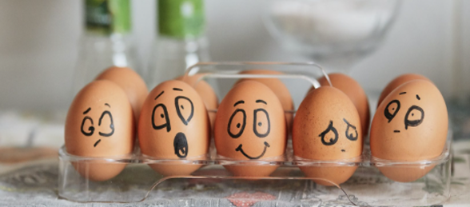

Эмоциональное выгорание – стадии и симптомы, методы восстановления и профилактики
Изначально термин «эмоциональное профессиональное сфере и относился...

Изначально термин «эмоциональное профессиональное сфере и относился...
Один из самых важных навыков, которые может дать работа с психотерапевтом - умение в разных ситуациях по-разному обходиться ...

Изначально термин «эмоциональное профессиональное сфере и относился...
Один из самых важных навыков, которые может дать работа с психотерапевтом – умение в разных ситуациях по-разному обходиться ...
Клиенты часто спрашивают, как КОНТРОЛИРОВАТЬ свои негативные эмоции. Пришло время об этом написать!

Изначально термин «эмоциональное я...

Один из самых важных навыков, которые может дать работа с психотерапевтом – умение в разных ситуациях по-разному обходиться ...

Клиенты часто спрашивают, как КОНТРОЛИРОВАТЬ свои негативные эмоции. Пришло время об этом написать!